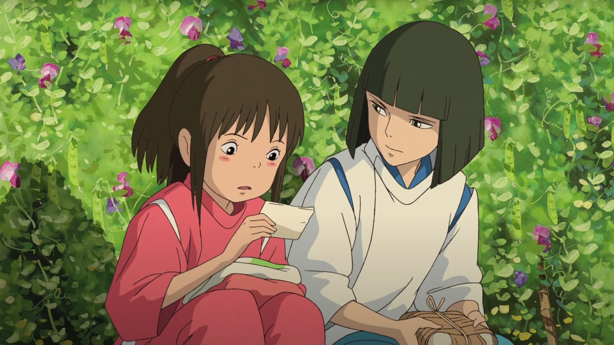
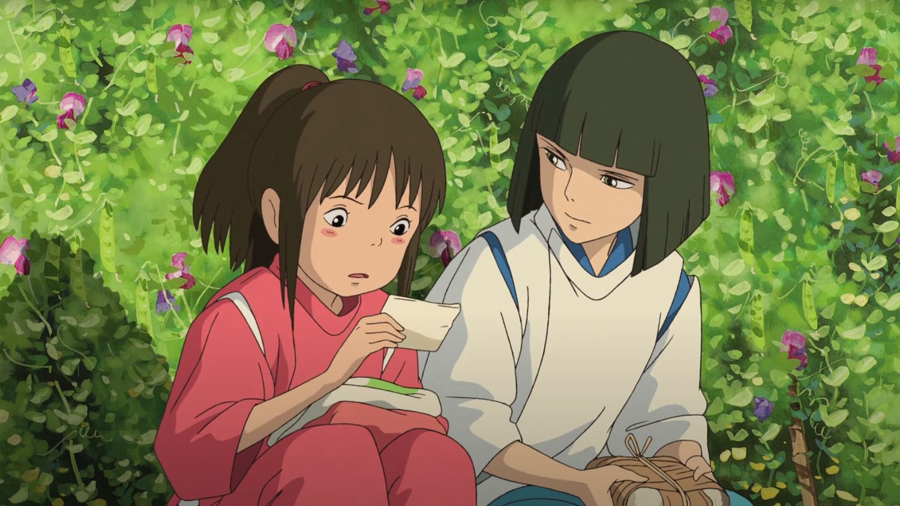
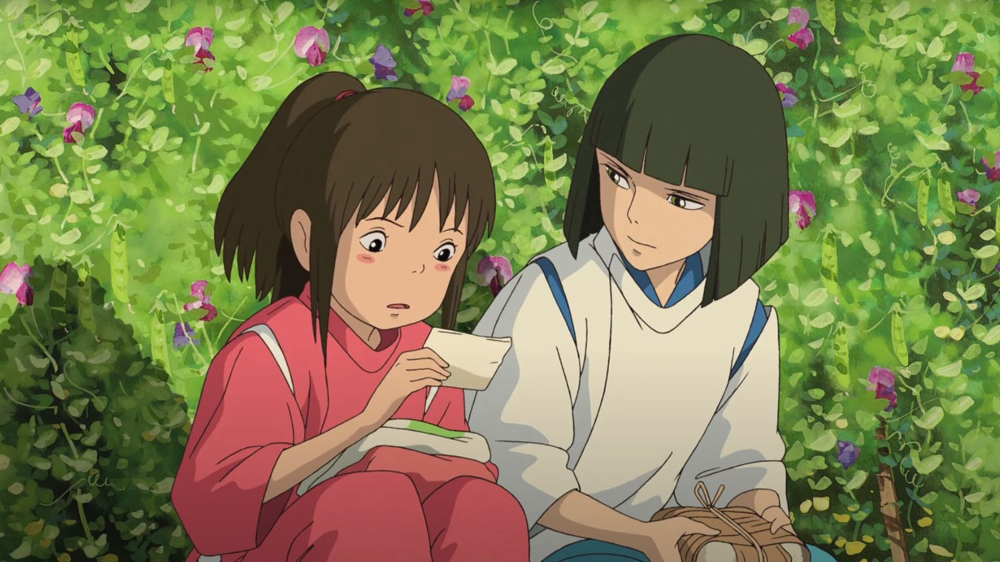
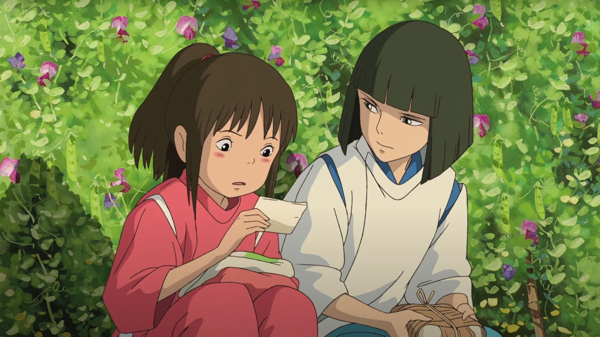
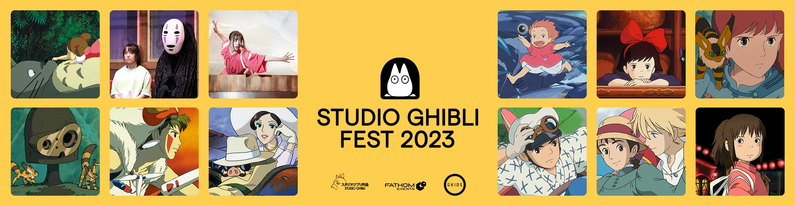

Over the course of her journey in this alternate world, Chihiro learns valuable lessons about the fundamental nature of the universe as well as the importance of friendship. Through the use of soft world-building, Miyazaki constructs a memorable heterotopic environment that is infinitely nuanced and densely packed with mysterious entities that we don't quite know or understand. These magical creations linger on in our minds long after the film is over, shaping our own memories of the indelible experience of witnessing Miyazaki's mastery.
